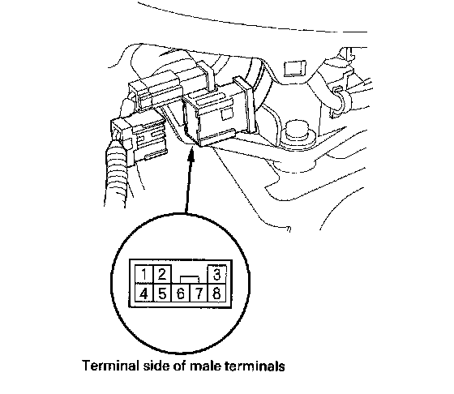

Transmission Gear Selection Switch Test
Transmission Gear Selection Switch Test1. Remove the driver's center console trim.
2. Disconnect the transmission gear selection switch/park pin switch/A/T gear position indicator panel light harness connector.

3. Check for continuity between connector terminals No. 3 and No. 2.
There should be continuity when the shift lever is in the M position, and no continuity when the shift lever is in any position other than M.
4. Check for continuity between connector terminals No. 7 and No. 2.
There should be continuity when the shift lever is pushed toward the upshift position (+) and no continuity with the shift lever released to the neutral position.
5. Check for continuity between connector terminals No. 8 and No. 2.
There should be continuity when the shift lever is pulled toward the downshift position (-) and no continuity with the shift lever released to the neutral position.
6. If the switch fails to work properly, replace the transmission gear selection switch and shift lever bracket base as an assembly. The transmission gear selection switch, park pin switch, and A/T gear position indicator panel light harness are not available separately from the shift lever bracket base.
7. Install the driver's center console trim.